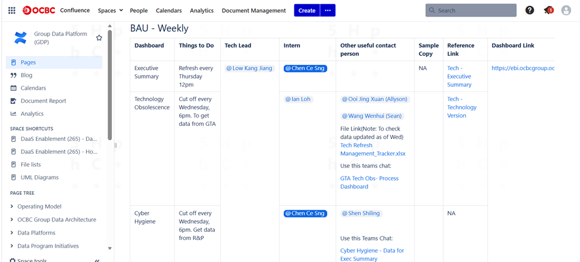
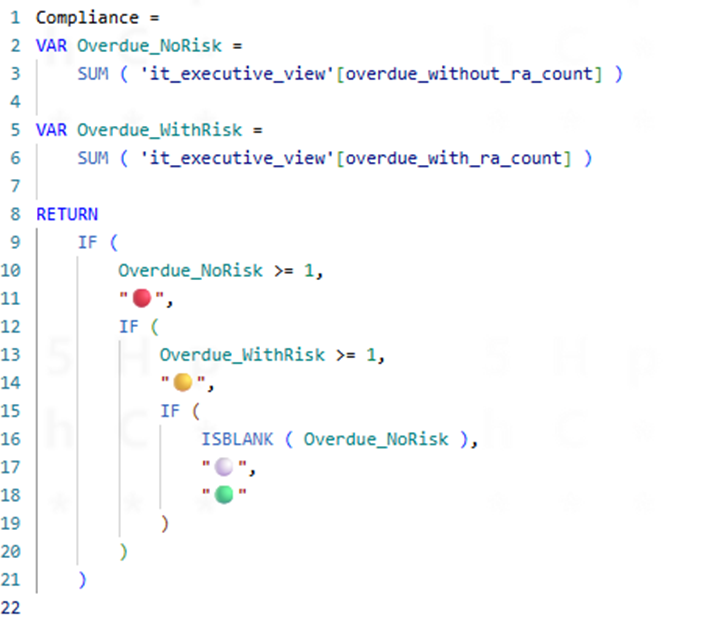
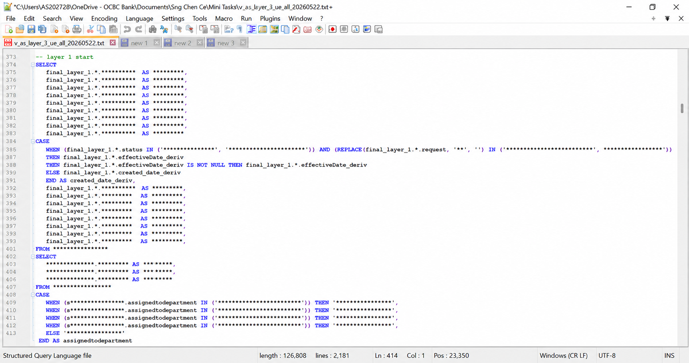
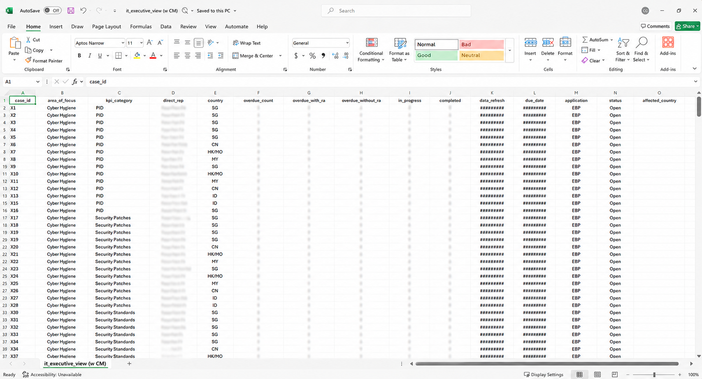
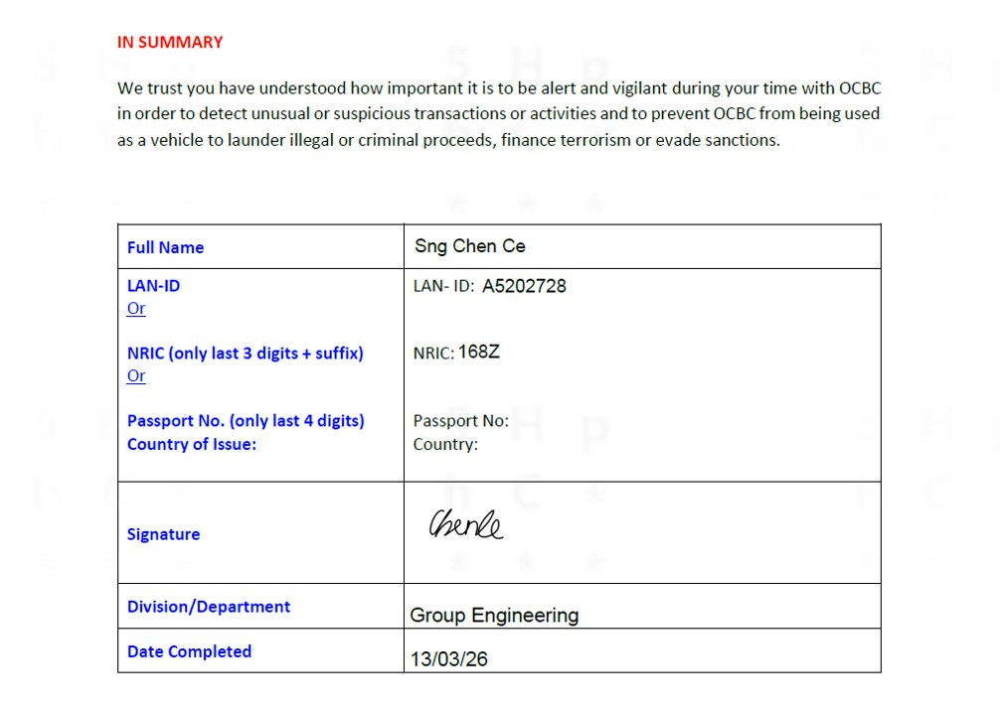
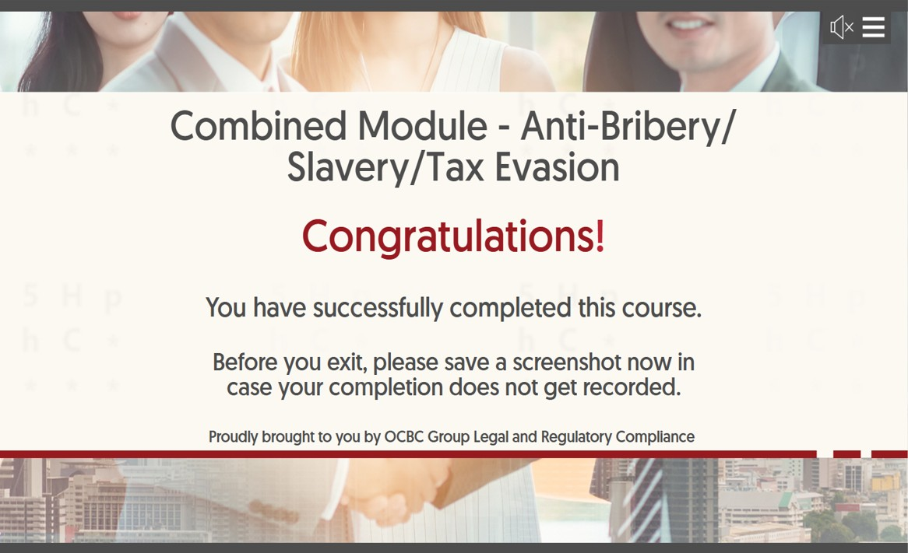
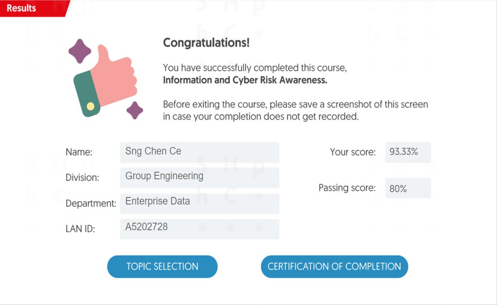
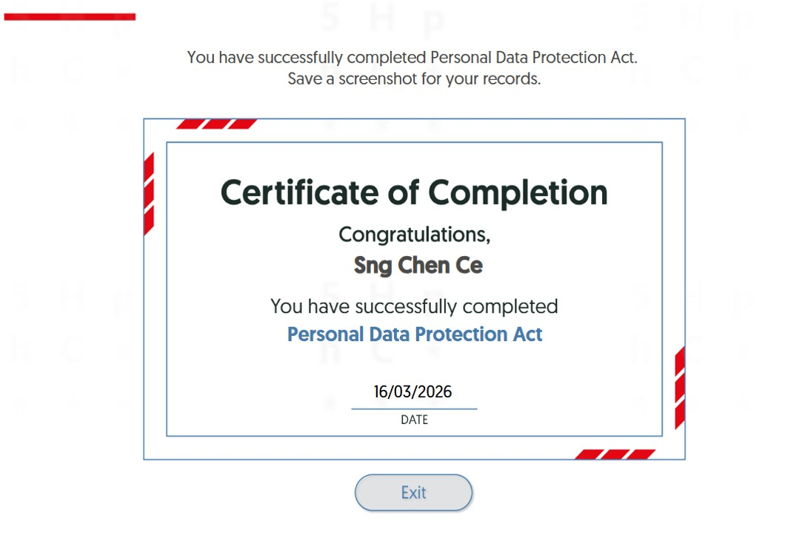
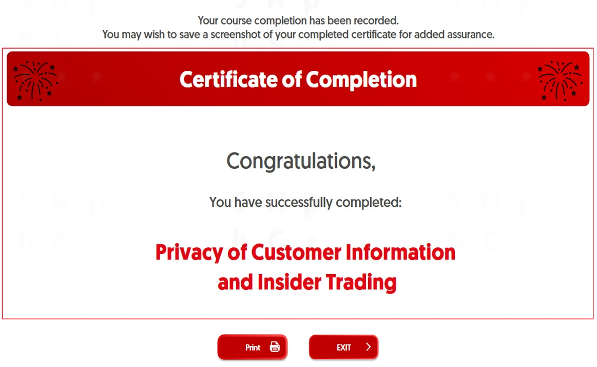
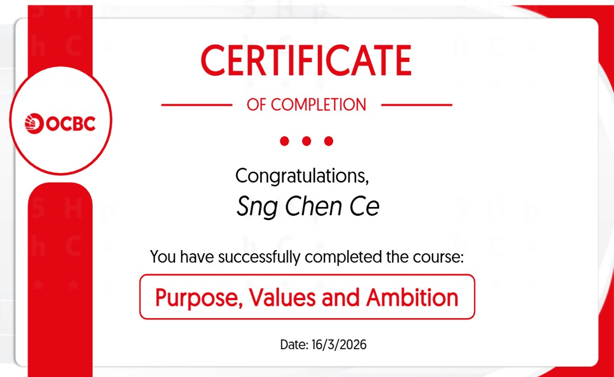

Chen Ce Sng
Data Engineer Intern
Oversea-Chinese Banking Corporation (OCBC Bank)
Group Engineering – Enterprise Data
12 March 2026 – 11 March 2027
About Me
My Background
I am a final-year student at Temasek Polytechnic pursuing a Diploma in Big Data & Analytics with a keen interest in business intelligence, data engineering, visualisation, and analytics. I enjoy exploring how data can be transformed into meaningful insights that support informed decision-making, and I am always eager to expand my technical knowledge through hands-on learning and real-world applications.
My internship at OCBC Bank has provided me with the opportunity to apply the knowledge gained throughout my diploma in a professional setting while developing both my technical and workplace skills. I believe in approaching challenges with curiosity, attention to detail, and a willingness to learn, and I look forward to continuing my growth as I prepare for a career in the data analytics field.
Education
Temasek Polytechnic
Diploma in Big Data & Analytics
Academic Year 2024/2025 -
2026/2027
Career Aspirations
To pursue a career as a Data Analyst/Engineer applying business intelligence and data visualisation techniques to transform data into meaningful insights that support organisations to make informed, data-driven decisions.
Internship Overview
Job Scope & Key Responsibilities
During my internship with the Group Engineering – Enterprise Data team at OCBC Bank, I support the development of business intelligence reporting solutions using Microsoft Power BI. My role involves reviewing reporting requirements to understand business needs, developing interactive dashboards, creating DAX measures to implement business logic, and writing SQL queries to retrieve and validate data for reporting purposes. In addition, I maintain project documentation in Confluence to record development progress, technical information, and reporting requirements, ensuring that project knowledge is organised and readily accessible within the team.
Key Responsibilities:
- User Requirement Gathering: Review and interpret reporting requirements from users to understand business objectives and translate them into dashboard features, calculations, and visualisations.
- Project Documentation: Maintain project documentation in Confluence by recording development progress, documenting reporting requirements, and consolidating technical knowledge for future reference and collaboration.
- Power BI Dashboard Development: Design and enhance interactive dashboards by selecting appropriate visualisations, improving report usability, and presenting business information in a clear and meaningful manner.
- Power BI DAX Measures: Create DAX measures and calculated columns to implement business logic, develop key performance indicators (KPIs), and ensure reporting calculations produce accurate results.
- SQL Querying & Data Validation: Write SQL queries to retrieve and validate data, verify reporting outputs, and support the accuracy and consistency of Power BI reports.
Key Projects
Disclaimer: The dashboard screenshots presented in this portfolio have been masked to protect confidential business information and sensitive organisational data. All visualisations are shown for example purposes only.
Operations Executive View Dashboard

Assisted in the development of the Operations Executive Dashboard in Microsoft Power BI that provides senior management with a consolidated view of operational performance across Singapore, Malaysia, Hong Kong, Macau, and China. The dashboard supports daily operational monitoring by presenting key indicators such as backlog against Service Level Agreements (SLAs), volume spike detection cases, staff availability, overtime trends, and operational escalation status, enabling management to identify areas requiring timely attention.
IT Executive View Dashboard

Contributed to developing the IT Executive Dashboard that provides senior management with an overview of technology and cyber risk indicators across Singapore, Malaysia, Hong Kong/Macau, China, and Indonesia. The dashboard consolidates information relating to different area of focus including, technology obsolescences, cyber hygiene, vulnerability management, change management, and technology service desk tickets, allowing management to monitor outstanding issues, identify overdue cases, and track overall operational performance across multiple regions.
Card Operations Management Dashboard

Supported the enhancement of a management dashboard that provides operational and workforce insights for the Card Operations department. The dashboard consists of monitoring, analytical, and people-focused views that enable managers to monitor operational case volumes, review historical performance trends, and track workforce indicators such as staff attendance, overtime, extended working hours, and work performed during weekends or public holidays.
Evidence of Work
Disclaimer: The dashboard screenshots presented in this portfolio have been masked to protect confidential business information and sensitive organisational data. All visualisations are shown for example purposes only.
Business Requirements Analysis

Business requirements gathered and documented to understand reporting objectives, key performance indicators (KPIs), and user expectations before dashboard development, ensuring the final solution aligned with business needs.
Confluence Project Documentation

Documentation created in Confluence to record business requirements, project progress, implementation details, and development notes, supporting knowledge sharing and ease of future maintenance.
Executive Reporting Dashboard

Interactive Power BI dashboard developed to present operational and management information through clear visualisations, KPI cards and trend analysis to support business decision-making.
DAX Measures & Business Logic

DAX calculations developed to implement business rules, calculate KPIs, and produce dynamic measures required for executive reporting dashboards.
SQL Data Consistency Validation

SQL queries written to query, retrieve, verify and validate reporting data, ensuring that dashboard outputs accurately reflected the underlying datasets.
Weekly Reporting Data Preparation

Excel worksheets used to prepare and review weekly reporting data before it was incorporated into Power BI dashboards, ensuring completeness and consistency throughout the reporting process.
My Internship Journey
Beginning of Internship
Starting my internship at OCBC Bank was both exciting and challenging, as it marked my first opportunity to apply the knowledge I had gained in school within a professional environment. Although I was already familiar with SQL, Power BI and data analytics through my coursework at Temasek Polytechnic, I quickly realised that working in a corporate environment required much more than technical knowledge. During my first few weeks, I focused on understanding the team's reporting processes, becoming familiar with internal tools such as Confluence, and learning how reporting requirements were translated into business intelligence solutions. One challenge I encountered was using Confluence, as I had no prior experience with the platform and was initially unsure how to organise and document my work effectively. Through guidance from my supervisor and by referring to existing project documentation, I gradually learnt how to structure documentation clearly so that project information could be easily understood and referenced by other team members.
Learning Phase
As I became more familiar with the team's workflow, I gradually took on more technical responsibilities involving Power BI development. I learnt how to create DAX measures based on reporting requirements, write SQL queries to retrieve and validate data, and develop interactive dashboards that presented information in a meaningful way. Initially, I tended to focus on producing the correct calculations without fully understanding the business purpose behind them. However, regular discussions with my supervisor helped me realise that every DAX measure needed to accurately reflect the underlying business logic. This changed the way I approached development, as I began spending more time understanding the reporting requirements before implementing calculations, resulting in more accurate and reliable reports.
Growing Confidence
One of the biggest challenges I faced was designing dashboards with an effective user interface and user experience. As I do not naturally consider myself a creative person, my initial dashboard designs were technically correct but were not as intuitive or user-friendly as expected. Through several rounds of feedback and discussions with users and my supervisor, I gradually understood how dashboard layout, visual hierarchy and chart selection could significantly influence how information was interpreted. I also studied existing internal dashboards developed within the organisation to better understand established design practices and reporting standards. By applying these observations and continuously refining my work based on feedback, I was able to develop dashboards that were clearer, more user-friendly, and better aligned with users' expectations.
Key Takeaways
Looking back on my internship so far, I have come to realise that developing effective business intelligence solutions involves much more than technical knowledge alone. Successfully delivering a dashboard requires understanding reporting requirements, validating calculations, presenting information clearly, documenting development work, and continuously improving based on feedback. Throughout my projects, I applied analytical thinking, attention to detail, problem-solving skills and a willingness to learn when faced with unfamiliar tasks. Rather than viewing feedback as criticism, I learnt to treat it as an opportunity to improve both my technical work and my overall approach to problem-solving. This mindset has helped me become more confident and adaptable in a professional working environment.
Future Development
As I continue my internship, I hope to deepen my understanding of the complete business intelligence development lifecycle, from analysing reporting requirements to delivering dashboards that support informed decision-making. I also hope to gain greater exposure to engaging with business users so that I can better understand their requirements and translate them into effective reporting solutions. At the same time, I intend to continue strengthening my technical skills in Power BI, DAX and SQL while further developing my communication, documentation and dashboard design skills. These experiences have reinforced my aspiration to pursue a career in data analytics, where both technical expertise and effective collaboration play equally important roles.
Onboarding Training Modules Certifications
Basic AML Module

Introduces the fundamentals of Anti-Money Laundering (AML), including recognising suspicious transactions, understanding regulatory requirements, and supporting compliance with financial crime prevention measures.
Anti-Bribery & Corruption, Anti-Modern Slavery and Anti-Facilitation of Tax Evasion Program

Provides an overview of ethical business conduct, covering anti-bribery and corruption, modern slavery prevention, and responsibilities in preventing the facilitation of tax evasion.
Cyber and Information Risk Awareness Program

Develops awareness of cyber security risks and information security practices, highlighting employees' responsibilities in protecting organisational systems, data, and digital assets.
Overview of Personal Data Protection Act (PDPA)

Introduces the key principles of Singapore's Personal Data Protection Act (PDPA), focusing on the responsible collection, use, storage, and disclosure of personal data.
Privacy of Customer Information and Insider Trading

Explains the importance of safeguarding customer information, maintaining confidentiality, and complying with regulations relating to insider trading and ethical handling of sensitive information.
OCBC Purpose and Values

Introduces OCBC's corporate purpose, values, and expected workplace behaviours, emphasising integrity, collaboration, customer focus, and professional responsibility.
Let's Connect
Contact Information
Thank you for taking the time to view my internship portfolio. If you would like to connect, discuss my internship experience, or explore opportunities with like-minded individuals in the data analytics and business intelligence field, please feel free to reach out to me using the contact details below.